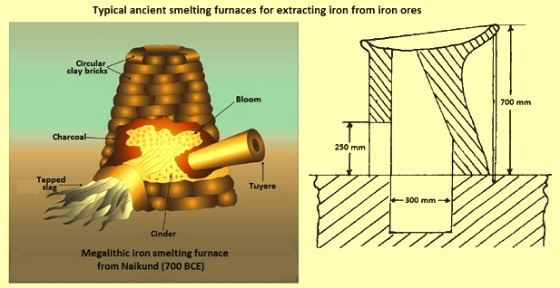
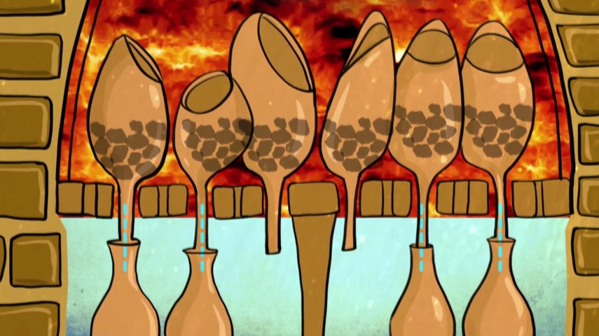
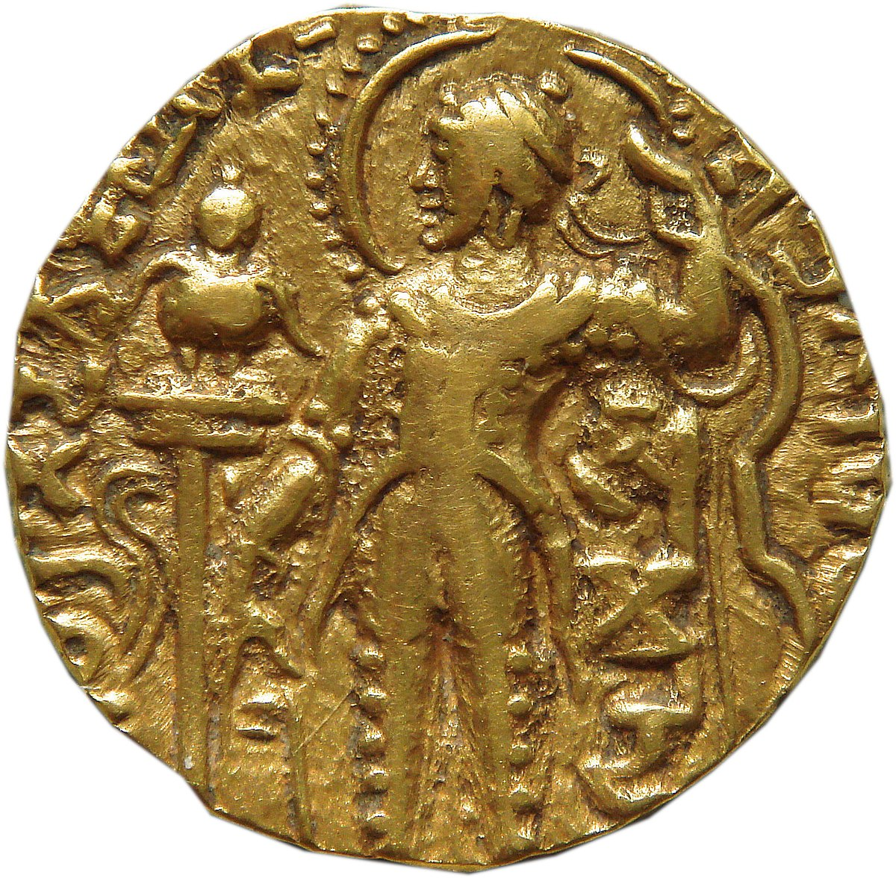
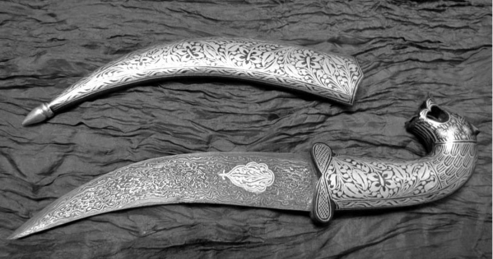

India has a rich history of metallurgical advancements dating back thousands of years. The subcontinent was known for its expertise in iron, copper, bronze, zinc, gold, and silver metallurgy, influencing global trade and technological development. Indian metallurgists pioneered extraction, alloying, and forging techniques that were far ahead of their time.
Ancient Indian Metallurgy
Early Metal Usage
The Harappan Civilization (3300–1300 BCE) used copper, bronze, lead, and tin for tools, weapons, and ornaments. Archaeological excavations at sites like Mohenjo-Daro and Harappa reveal well-crafted metal artifacts, indicating a deep understanding of metallurgy. Metallurgical techniques included casting, hammering, and alloying to improve the strength and durability of metal objects.
Iron Metallurgy

India was one of the first regions to develop iron smelting (by 1200 BCE). The Iron Age in India saw the production of high-quality iron tools, which contributed to agricultural and military advancements. Indian blacksmiths perfected techniques to remove impurities and create durable iron objects, helping sustain powerful kingdoms.
Zinc Distillation

Indian metallurgists were the first to develop a zinc extraction process in Zawar, Rajasthan, around the 4th century BCE. Zinc was difficult to extract due to its low boiling point, but Indian techniques involved distillation in closed crucibles, a method unknown to the West until centuries later. This innovation was essential in developing brass, an alloy of copper and zinc, which became widely used in India and the Middle East.
Monolithic Iron Structures
The Iron Pillar of Delhi (4th century CE), made of pure wrought iron, remains rust-free despite being over 1,600 years old. This is due to the high phosphorus content in the iron, which forms a protective layer, preventing corrosion. This advanced understanding of metallurgy showcased India's superior iron processing techniques.
Gold and Silver Refining

Ancient Indian texts like the Arthashastra (4th century BCE) describe gold purification methods using mercury amalgamation. Gold extraction and coin minting were well-developed industries during the Maurya and Gupta periods. Indian jewelers mastered intricate designs and techniques, influencing gold craftsmanship worldwide.
Ancient Indian Metal Extraction & Wootz Steel
Metal Extraction Techniques
Indian metal extraction methods were based on empirical observations, which later evolved into systematic processes. Some of the most significant extraction techniques included:
Copper Smelting: India was one of the earliest regions to develop copper extraction. Copper was used extensively for weapons, utensils, and religious artifacts. Evidence from the Khetri mines in Rajasthan suggests copper production as early as 2000 BCE.
Iron Extraction and Forging: Iron ore was reduced using charcoal in bloomery furnaces. The production of iron led to the creation of sophisticated tools and weapons, which strengthened India's trade relations with other civilizations.
Zinc Extraction: Zinc smelting at Zawar in Rajasthan was a revolutionary breakthrough, where the distillation process prevented zinc from vaporizing and escaping, allowing pure metal extraction.
Gold Extraction: Gold was extracted using traditional placer mining and mercury amalgamation techniques. South India, particularly Karnataka, had rich gold deposits that contributed to temple architecture and coinage.
Wootz Steel: The World's Finest Steel

Wootz steel, an ultra-high carbon steel known for its exceptional sharpness, strength, and flexibility, was produced in India as early as the 6th century BCE. This steel was renowned worldwide and was exported to the Middle East, Europe, and beyond.
Process of Wootz Steel Production
Iron Ore Selection: High-purity iron ore was sourced from southern India, especially from Karnataka and Andhra Pradesh. The ore was carefully chosen to ensure minimal impurities and optimal carbon absorption.
Crucible Smelting:
Small pieces of iron were mixed with carbon-rich materials like wood, leaves, or charcoal.
This mixture was placed inside high-quality clay crucibles, which were then sealed.
The crucibles were heated in a controlled environment, reaching temperatures of around 1,300°C.
Slow Cooling:
The molten metal was allowed to cool gradually inside the crucible.
This slow cooling process led to the formation of unique microstructures, including carbon nanotubes, which contributed to the steel's superior properties.
The final ingots had a characteristic "wootz" pattern due to the uniform distribution of carbon.
Forging into Weapons:
The steel ingots were further refined and forged into weapons such as swords and daggers.
The forging process involved repeated heating, hammering, and cooling to enhance the blade's toughness and sharpness.
Impact and Global Influence
Highly Sought-After Export: Wootz steel became highly prized by Arab traders, who introduced it to Syria, Persia, and later Europe, where it was used to create legendary Damascus swords.
Superior Quality: The steel was known for its distinctive watered pattern, a result of microstructural carbon distribution, which gave it superior strength and cutting ability.
Unmatched Durability: European metallurgists tried to replicate the technique but failed until modern metallurgy understood its complex composition.
Cultural Exchange: Indian metalworking techniques also influenced Southeast Asian and Chinese metallurgies through trade and cultural exchanges.
Wootz steel remained an unparalleled achievement in metallurgy, demonstrating India's profound knowledge of material science and engineering. This innovation not only contributed to Indian civilization but also left an enduring impact on global weaponry and metalworking traditions.